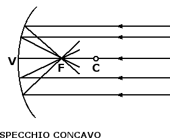
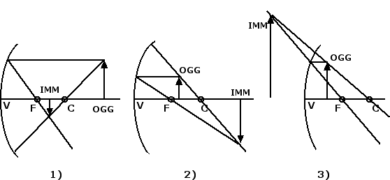

Riflessione e specchi
Specchi sferici
Prendiamo ora in considerazione uno specchio sferico, costituito da una calotta sferica. Lo specchio si dice concavo se la superficie riflettente è posta nella parte di calotta rivolta verso il centro della sfera, lo specchio si dice invece convesso se la superficie riflettente è rivolta dalla parte opposta rispetto al centro della calotta sferica. Prima di procedere è necessario introdurre ancora un po' di nomenclatura: si definisce vertice V dello specchio il punto in cui lo specchio interseca l'asse di simmetria passante per il suo centro C. Tale asse di simmetria prende il nome di asse ottico principale.

Tutti i raggi provenienti da direzioni parallele all'asse ottico principale vengono riflessi in un punto che prende il nome di fuoco F dello specchio. Questa proprietà può essere utilizzata per costruire l'immagine di un oggetto che si riflette in uno specchio sferico assieme alla seguente altra proprietà: un raggio di luce che passa per il centro C della calotta sferica ha un angolo di incidenza sullo specchio uguale a 0°. Pertanto anche l'angolo di riflessione è uguale a 0° e il raggio riflesso percorre lo stesso cammino ottico del raggio incidente.
Dobbiamo ora distinguere tre casi possibili per quel che concerne la posizione relativa dell'immagine e dell'oggetto: 1) l'oggetto si trova alla destra del centro C, 2) l'oggetto si trova tra il fuoco F e il centro C, 3) l'oggetto si trova tra il vertice V e il fuoco F. Queste tre possibilità sono raffigurate nella figura sottostante:

1) Se l'oggetto si trova alla destra del centro C si forma un'immagine reale rimpicciolita e capovolta dell'oggetto. L'immagine è reale perché su di essa arrivano i raggi luminosi. 2) Se l'oggetto si trova tra il fuoco F e il centro C si forma un'immagine reale, ingrandita e capovolta dell'oggetto. 3) Se l'oggetto si trova tra il vertice V e il fuoco F si forma un'immagine virtuale e ingrandita dell'oggetto alla sinistra del vertice V. L'immagine è virtuale perché si forma sui prolungamenti dei raggi luminosi passanti per l'oggetto.
Gli specchi concavi possono essere utilizzati per far convergere i raggi del Sole in un unico punto, in modo da raccogliere l'energia solare e utilizzarla per riscaldare l'acqua per uso domestico o per far fondere dei metalli.